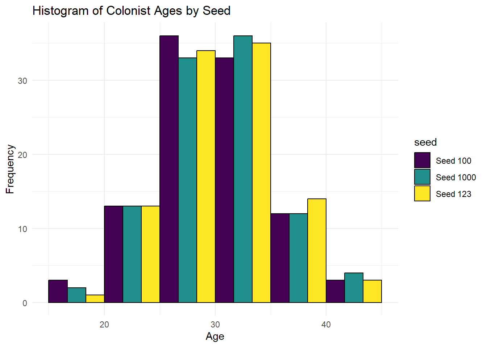
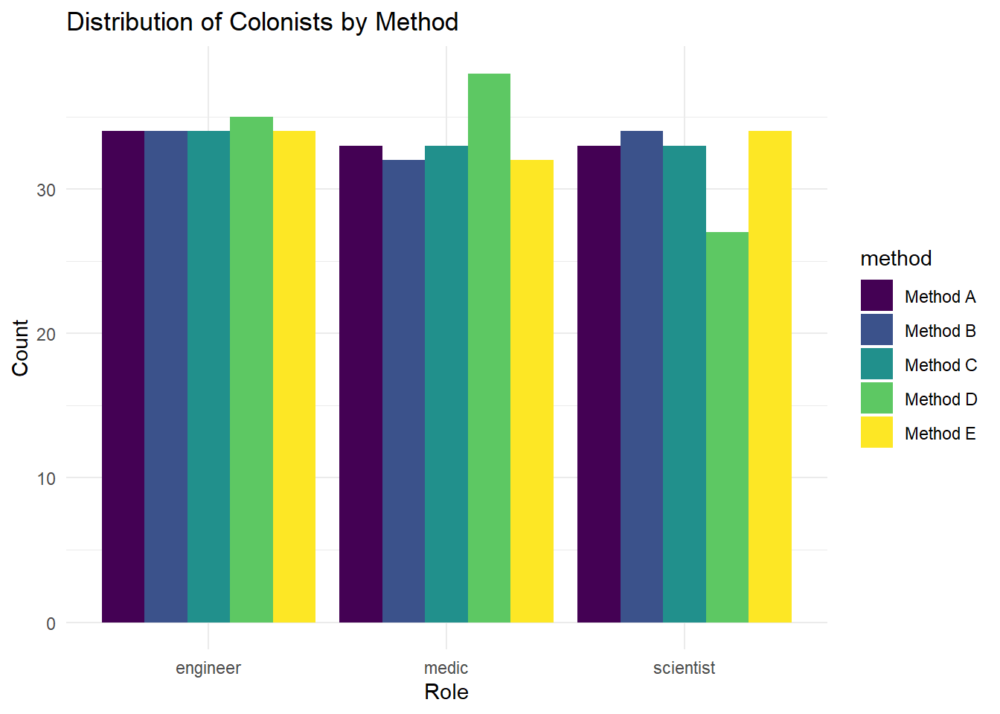

55 Lab: Simulating data
Welcome to the Mars Colony Simulation Lab! In this lab, we will embark on a journey to Mars, simulating potential colonists’ data to plan our future Mars colony. As planners of a future Mars settlement, we must understand the demographic and professional attributes that will help sustain a human presence on Mars. This lab teaches you to simulate these attributes using R.
Learning goals
Simulate Quantitative Variables: Learn to create simulated quantitative variables representing colonist attributes using
rnorm(),runif(), andrpois().Generate Character Variables: Use
rep()to create categorical variables that represent different groups within the colonists, such as their professions or roles in the colony.Replication of Data Simulation: Utilize
replicate()to repeat the data simulation process, representing multiple scenarios or batches of potential colonists.
Getting started and warming up
Exercises
Instead of analyzing other people’s data, we’ll be generating our own! You will generate basic attributes for 100 potential colonists. These attributes include age, health, and fitness levels, which are critical for survival on Mars.
Exercise 1: Simulating Our Colonists
Imagine you’re choosing the first 100 colonists for Mars. Let’s simulate their ages assuming a mean age of 30 and a standard deviation of 5—balancing youth with sufficient experience.
Setting Up Your Simulation. We’ll use the rnorm() function, which is perfect for this task because it generates normally distributed random numbers. Let’s examine the arguments for rnorm() using the ?rnorm command in R.
Parameters:
- n = 100: The number of random ages we want to generate.
- mean = 30: The average age of our colonists. We’re targeting a young, but experienced group of individuals.
- sd = 5: The standard deviation, representing age variability around the mean.
Here’s code to generate an age distribution:
1.1. Create a dataframe to store your colonists’ attributes. I’ve already gotten you started, but you’ll need to add their ages.
## Error in data.frame(id = 1:100, ): argument is missing, with no defaultNow, let’s visualize the age distribution of our colonists using a histogram. This will help us understand the diversity within our potential Mars colony.

1.2. Consider the histograms of the age distribution that we’ve generated (as well as two more I added). What do you notice about the age distribution of our colonists? How does the seed affect the spread of the distribution?
What roles would these colonists have? Let’s decide….. We need engineers, scientists, and medics in equal numbers.
We’ll create a variable, role, with three categories: engineer, scientist, and medic. We’ll use the rep() function to simulate this categorical variable. There are several different ways to assign these roles, depending on the structure you want — for example:
a repeating sequence (e.g., engineer → scientist → medic → …),
long blocks of repeated roles (e.g., engineer → engineer → engineer → … → scientist → scientist → …)
repeated sets in a fixed pattern (e.g., engineer → engineer → … → scientist → scientist → … → medic → medic → … → engineer),
randomly drawn roles with equal probability (e.g., scientist → medic → scientist → engineer → medic → …),
or a shuffled version of an existing list (e.g., scientist → medic → engineer → engineer → medic → …).
Below, we show several ways to construct this variable. Try to figure out how they differ — and which one might best suit your colony’s needs.
set.seed(1)
roleA <- rep(c("engineer", "scientist", "medic"),
length.out = 100)
# this works if we want to set a specific number of each role
roleB <- rep(c("engineer", "scientist", "medic"),
each = 34,
length.out = 100)
roleC <- rep(c("engineer", "scientist", "medic"),
times = c(33, 33, 33),
length.out = 100)
# if you want to use sampling weights
roleD <- sample(c("engineer", "scientist", "medic"),
replace = TRUE,
size = 100, prob = c(1,1,1))
# if you want to randomly shuffle
roleE <- sample(roleB, size = 100, replace = FALSE)There are different ways to assign these roles, depending on the pattern of assignment we want.

If you want to see the raw data as a table, click here
df <- data.frame(row = rep(1:100, 5),
role = c(roleA, roleB, roleC, roleD, roleE),
method = c(rep("Method A", length(roleA)),
rep("Method B", length(roleB)),
rep("Method C", length(roleC)),
rep("Method D", length(roleD)),
rep("Method E", length(roleE))))
df %>%
DT::datatable(
rownames = FALSE,
class = "cell-border stripe",
filter = list(position = "top"),
options = list(
pageLength = nrow(df)/5,
autoWidth = TRUE,
bInfo = FALSE,
paging = FALSE
)
)1.3. Create a role variable using one of the methods above, or design your own. Explain how the method you chose reflects your goals: do you want equal distribution, randomness, or a specific pattern? Be specific about what your colony needs.
Next, we’ll simulate the health and fitness levels of our colonists. Health and fitness are essential for the physical and mental well-being of our colonists, ensuring they can adapt to the harsh Martian environment.
Setting Up Your Simulation. We’ll use the runif() function to generate random numbers drawn from a uniform distribution. This distribution is ideal for simulating health and fitness levels, as it ensures equal probability across the range of values.
Examine the arguments for runif(), using the ?runif command in R. Notice that although some of the arguments are the same, such as n, and parameters for the distribution are different.
On Mars, health is measured using the MARSGAR (Martian Adult Resilience Score Gauging Astronaut Readiness; Musk, 2026) scale, which ranges from 0 to 100. Like the suspiciously-similar Apgar score for newborns, a score of 0 indicates that a colonist has no signs of life: no heartbeat, no breathing, no response to stimulation, no muscle tone, and central cyanosis/pallor. A score of 100 indicates a colonist in perfect health. Take this scoring into consideration when you simulate the health of your colonists.
1.4. Add a uniformally-distributed MARSGAR variable to your colony.
Now, let us examine our colonists. We will create a scatter plot to visualize the relationship between age and health. This will help us understand the health distribution of our potential Mars colony.

What a contrived plot! It seems that there’s no relationship between age and health in the data. How odd! (Or is it?)
Spoiler: It’s not odd. We generated the data univariately, so there’s no reason for there to be a relationship between age and health.
Exercise 2: Growing Our Colonists
Next, we’ll simulate the relationship among several attributes of our colonists. We’ll consider technical skills, problem-solving abilities, psychological resilience, teamwork, and adaptability. These attributes are crucial for the success of our Mars colony, ensuring that our colonists can work together effectively and overcome challenges.
There are several ways to simulate variables with specific correlations. I will show two approaches:
- using multiple steps with rnorm, which is a less coputationally efficient, but more accessible approach and
- using mvrnorm, which generates data from a multivariate distribustion.
Basic method
To start, let’s illustrate a simpler method using rnorm to simulate how certain attributes like age could influence others such as technical skills—assuming that older colonists, with more experience, likely have higher technical skills.
To model this, we define the variable technical_skills as a linear function of age, incorporating random noise for variability. Specifically, we use the regression equation technical_skills = 2 * age + noise, where noise is normally distributed with a mean of zero and a standard deviation of one. This implies that for each additional year of age, a colonist’s technical skills increase by two points, with some random noise added in.
2.1. Simulate technical skills based on age using the equation technical_skills = 2 * age + noise.
# Simulate technical skills based on age
# Set the seed for reproducibility
set.seed(1235)
# Create a variable for technical skills
df_colonists$technical_skills <- 2 * df_colonists$age + rnorm(100, mean = 0, sd = 1)Now, let’s visualize the relationship between age and technical skills using a scatter plot.
2.2. Simulate problem-solving abilities based on their assigned role
Now its your turn! Simulate problem-solving abilities based on their assigned role. Recall that the options are “engineer”, “scientist”, “medic”. First you need to think about the relationship between the role AND the variable being simulated. Then you can write up the equation that would create that relationship. And then you can write the code to simulate the variable.
Click this to see a hint
If you’re stuck, you can check the source code for the solution by examining the following chuck in this corresponding rmd file exercise2.2solution.Click this to see a solution
df_colonists$problem_solving[df_colonists$role == "engineer"] <- rnorm(sum(df_colonists$role == "engineer"), mean = 100, sd = 10)
df_colonists$problem_solving[df_colonists$role == "scientist"] <- rnorm(sum(df_colonists$role == "scientist"), mean = 80, sd = 10)
df_colonists$problem_solving[df_colonists$role == "medic"] <- rnorm(sum(df_colonists$role == "medic"), mean = 60, sd = 10)Exercise 3: Exploring Correlations with mvrnorm
Now, this approach works well if you already know what you want your model to look like. But what if you want to simulate multiple variables with specific correlations? That’s when the mvrnorm function comes in handy from the MASS package. This function generates data from a multivariate normal distribution, where we can specify means, standard deviations, and the correlation between variables. This is ideal for simulating more complex interdependencies that might exist among colonists’ traits.
Setting Up Your Simulation. As you’ve hopefully gathered, we’ll use the `mvrnorm function to generate random numbers drawn from a multivariate distribution. I encourage you to examine the arguments for mvrnorm(), using the ?mvrnorm command in R.
Examine the arguments for mvrnorm(), using the ?mvrnorm command in R. Notice that the arguments are similar to rnorm(), but with the addition of the Sigma parameter, which represents the covariance matrix. This matrix allows us to specify the relationships between the variables we’re simulating.
(Remember, the covariance matrix is a square matrix that shows the variances of each variable on the diagonal and the covariances between variables on the off-diagonals. A helpful trick is that the correlation matrix is just a standardized covariance matrix, where the diagonals are all 1s, and the off-diagonals are the correlations between variables. You can convert between the two using the cov2cor() and cor2cov() functions in R.)
Parameters for Simulation:
- n = 100: We are simulating attributes for 100 colonists.
- mu = c( 50, 50): Represents the average scores for Resilience and Agreeableness.
- Sigma = matrix(c(100, 50, 50, 100), ncol = 2): The covariance matrix, where diagonals represent variances and the off-diagonals represent the covariance between the traits.
3.2. Simulate Resilience and Agreeableness using the mvrnorm function.
I’ve provided the code below, but you’ll need to fill in the blanks.
# Simulate resilience and agreeableness using mvrnorm
# Define mean and covariance matrix
mean_traits <- c(____, ____)
cov_matrix <- matrix(c(_____, _____,
______, _________), ncol = 2)
# Generate correlated data
traits_data <- mvrnorm(n = 100, mu = mean_traits, Sigma = cov_matrix, empirical = FALSE)
Building a sustainable Mars colony requires more than just technical skills and physical health. The psychological composition of our colonist team could determine whether humanity’s first extraterrestrial settlement thrives or collapses under pressure. Until now, we’ve modeled colonist attributes as either independent variables or used explicit formulas to create relationships between them.
For a psychologically realistic simulation, we need to model the complex interplay of personality traits that will shape how colonists respond to the extreme conditions of Mars. The Big Five personality traits—openness, conscientiousness, extraversion, agreeableness, and neuroticism—will influence every aspect of colony life. When life support systems malfunction, conscientious colonists will follow repair protocols meticulously. During extended isolation, extraverts may struggle more than introverts. When conflicts arise in confined habitats, agreeable team members will help mediate solutions.
Unlike our previous attributes, we can’t model these personality traits independently of each other. Psychological research shows they naturally correlate in specific patterns—someone high in conscientiousness often tends toward lower neuroticism, while openness and extraversion frequently cluster together. These natural groupings create distinct personality clusters that will respond differently to Mars’ unique stressors. Using the mvrnorm function, you’ll simulate these interdependent traits and analyze whether your colony has the psychological resilience needed for Mars.
To ensure your simulation reflects actual human psychology, I’ve provided a correlation matrix from meta-analytic research showing how these traits relate to each other in Earth’s population. You’ll use that structure to guide your simulation in the next step.
3.3. Simulate Big Five Traits using the Correlation Matrix provided and examine how closely your colonists match up with your parameters.
Population Parameters for Big Five Traits To help you simulate realistic trait relationships, I’ve provided a correlation matrix from Park et al. (2020)1 2.
Click this to get a matrix you can quickly paste
cor_matrix_bigfive <- matrix(c(
1.0000, 0.2599, 0.1972, 0.1860, 0.2949,
0.2599, 1.0000, 0.1576, 0.2306, 0.0720,
0.1972, 0.1576, 1.0000, 0.2866, 0.1951,
0.1860, 0.2306, 0.2866, 1.0000, 0.1574,
0.2949, 0.0720, 0.1951, 0.1574, 1.0000
), nrow=5, ncol=5, byrow=TRUE,
dimnames=list(c("EX", "ES", "AG", "CO", "OP"),
c("EX", "ES", "AG", "CO", "OP")))Click this to see some bonus code that built the matrix above
# Define the bigfive
bigfive <- c("EX", "ES", "AG", "CO", "OP")
# Create an empty matrix with dimensions equal to the number of bigfive
cor_matrix <- matrix(0, ncol = length(bigfive),
nrow = length(bigfive),
dimnames = list(bigfive, bigfive))
# Initialize the diagonal to 1
diag(cor_matrix) <- 1
# Function to set correlation values ensuring symmetry
set_correlation <- function(matrix, row, column, value) {
matrix <- as.matrix(matrix)
matrix[row, column] <- value
matrix[column, row] <- value
return(matrix)
}
#for(i in 1:10) {
# print(paste0("set_correlation(cor_matrix, '",ma_res$construct_x[i],"' ,'", ma_res$construct_y[i],"',",round(ma_res[[6]][[i]][["barebones"]][["mean_r"]],4),")"))}
cor_matrix_bigfive <- cor_matrix <- cor_matrix %>%
set_correlation("ES", "AG", 0.1576) %>%
set_correlation("ES", "CO", 0.2306) %>%
set_correlation("ES", "EX", 0.2599) %>%
set_correlation("ES", "OP", 0.072) %>%
set_correlation("AG", "CO", 0.2866) %>%
set_correlation("AG", "EX", 0.1972) %>%
set_correlation("AG", "OP", 0.1951) %>%
set_correlation("CO", "EX", 0.186) %>%
set_correlation("CO", "OP", 0.1574) %>%
set_correlation("EX", "OP", 0.2949)
print(cor_matrix_bigfive)## EX ES AG CO OP
## EX 1.00 0.260 0.20 0.19 0.295
## ES 0.26 1.000 0.16 0.23 0.072
## AG 0.20 0.158 1.00 0.29 0.195
## CO 0.19 0.231 0.29 1.00 0.157
## OP 0.29 0.072 0.20 0.16 1.000Because this task is a tad more complex than the previous simulation, I’ve added optional hints below that walk through each step of the simulation process. You’re encouraged to try it on your own first—but use the hints if you’re unsure how to proceed.
Click here to see the hints
Big Picture Hint
Start by defining the parameters for your simulation…Step 1 Hint
- Begin by defining the parameters for your simulation. This includes the number of colonists, the mean and standard deviation for each of the Big Five personality traits, and the correlation matrix that models the relationships between these traits.
Step 2 Hint
- Simulate the Big Five personality traits using the mvrnorm function. This function will use your defined means and correlation matrix to generate a dataset that reflects the personality profiles of your simulated colonists.
Step 3 Hint
- Calculate the means and standard deviations of the Big Five personality traits in your simulated dataset. This will allow you to examine how closely your colonists match up with your population parameters.
Great! We have successfully simulated a dataset of 100 colonists with interdependent skills. The summary statistics show that the mean and standard deviation of the simulated data match the population parameters. The correlation matrix also aligns (fairly well) with the specified values. But did we just get lucky? Let’s run the simulation multiple times to ensure the results are consistent across different scenarios.
Click this text for a solution
# Set seed for reproducibility
seed <- 123
set.seed(seed)
# Load the Mass, Matrix, and then tidyverse (otherwise have to use conflicted package to handle conflict
## (note to self that MASS has a select function
library(MASS); library(Matrix); library(tidyverse); library(conflicted)
conflicts_prefer(dplyr::select())
# Number of colonists
n_colonists <- 100
# Define mean and covariance matrix
## "EX", "ES", "AG", "CO", "OP"
var_names <- c( "EX", "ES", "AG", "CO", "OP")
mean_traits <- c(-.5, .5, .25, .5, 0) # Mean of each trait
sd_traits <- c(1, .9, 1, 1, 1) # Standard deviation of each trait
# Get correlation matrix
cor_matrix_bigfive <- matrix(c(
1.0000, 0.2599, 0.1972, 0.1860, 0.2949,
0.2599, 1.0000, 0.1576, 0.2306, 0.0720,
0.1972, 0.1576, 1.0000, 0.2866, 0.1951,
0.1860, 0.2306, 0.2866, 1.0000, 0.1574,
0.2949, 0.0720, 0.1951, 0.1574, 1.0000
), nrow=5, ncol=5, byrow=TRUE,
dimnames=list(c("EX", "ES", "AG", "CO", "OP"),
c("EX", "ES", "AG", "CO", "OP")))
# Check if correlation matrix is positive definite (if all eigenvalues are positive)
eigen_values <- eigen(cor_matrix_bigfive)$values
is_positive_definite <- all(eigen_values > 0)
print(is_positive_definite)## [1] TRUE# Convert correlation matrix to covariance matrix
cov_matrix_bigfive <- cor_matrix_bigfive * (sd_traits %*% t(sd_traits))
# Print the covariance matrix
print(cov_matrix_bigfive)## EX ES AG CO OP
## EX 1.00 0.234 0.20 0.19 0.295
## ES 0.23 0.810 0.14 0.21 0.065
## AG 0.20 0.142 1.00 0.29 0.195
## CO 0.19 0.208 0.29 1.00 0.157
## OP 0.29 0.065 0.20 0.16 1.000simulated_data <- mvrnorm(n = 100, mu = mean_traits, Sigma = cov_matrix_bigfive)
# Add colonist_id and seed
simulated_data <- cbind.data.frame(colonist_id = 1:n_colonists, # add colonist_id
seed = seed, # add seed
simulated_data) # add simulated data
# Print the first few rows of the simulated data
print(head(simulated_data))## colonist_id seed EX ES AG CO OP
## 1 1 123 0.90 1.806 -1.00 0.82 0.141
## 2 2 123 -0.55 1.933 -0.48 0.92 0.023
## 3 3 123 -2.01 -0.095 -1.18 -0.23 -0.218
## 4 4 123 -0.40 0.642 -0.72 0.83 0.262
## 5 5 123 -0.18 -0.346 -0.22 0.31 0.585
## 6 6 123 -2.46 0.393 -0.42 -1.11 -0.413summary_stats_mean <- simulated_data %>%
select(-colonist_id, -seed) %>%
summarize(across(everything(), list(mean = mean))) %>%
rbind(mean_traits) # compare with population parameters from mean_traits
summary_stats_sd <- simulated_data %>%
select(-colonist_id, -seed) %>%
summarize(across(everything(), list(sd = sd))) %>%
rbind(sd_traits) # compare with population parameters from sd_traits
# compare with population parameters from mean_traits and sd_traits
summary_stats <- cbind(summary_stats_mean, summary_stats_sd)
#
summary_stats_cor <- simulated_data %>%
select(-colonist_id, -seed) %>%
cor() # compare with population parameters from cor_matrix_bigfive
summary_stats## EX_mean ES_mean AG_mean CO_mean OP_mean EX_sd ES_sd AG_sd CO_sd OP_sd
## 1 -0.43 0.45 0.081 0.43 -0.053 1 0.88 0.97 0.97 0.85
## 2 -0.50 0.50 0.250 0.50 0.000 1 0.90 1.00 1.00 1.00Exercise 4: Preparing for the Unexpected
Generate the big five for 100 colonies of 100 colonists, repeating this process multiple times to how much our colony might look if we settled on 100 different planets. We’ve already made the colonists for one planet, so we’ll just need to replicate that process 99 more times. There are two major approaches to take here. You can either use replicate, which is easier, or a for loop, which is more flexible.
4.1. Generate 100 colonies and extract the mean and standard deviation for extraversion.
Although you can get the summary statistic for each variable, let’s focus on the mean and standard deviation for extraversion as well as its correlation with openness.
Please plot the distribution of the correlation coefficients to see how consistent the relationship between extraversion and openness is across different planets. Consider how this distribution might differ across colonists. How large of a sample size would you need to get a stable estimate of the correlation between extraversion and openness?
4.2. Plot the distributions of those statistics from your new empire of colonies, and include an annotation in the plot to show the population parameters.
Big Picture Hints
You can either use thereplicate function or a for loop to repeat the simulation process multiple times.
Click this text for a hint about implementing with replicate
You can use thereplicate function to repeat the simulation process multiple times. Remember to append the results of each simulation to a single dataset.
After running the simulations, you can use the group_by and summarize functions to get the mean and standard deviation for extraversion and its correlation with openness.
Click this text for a hint about implementing with a forloop
You can use a for loop to repeat the simulation process multiple times. Remember to append the results of each simulation to a single dataset. After running the simulations, you can use thegroup_by and summarize functions to get the mean and standard deviation for extraversion and its correlation with openness.
Click this text for forloop based solution
library(dplyr)
conflicts_prefer(dplyr::select())
set.seed(124)
num_simulations <- 100 # Number of times to simulate the colonist data
all_simulations <- data.frame() # Create an empty data frame to store the results
for (i in 1:num_simulations) {
# Simulate the big five personality traits
simulated_data <- mvrnorm(n = 100, mu = mean_traits, Sigma = cov_matrix_bigfive)
# Add colonist_id and seed
simulated_data <- cbind.data.frame(colonist_id = 1:n_colonists, # add colonist_id
rep = i,
simulated_data) # add simulated data
# Append the results
all_simulations <- rbind(all_simulations, simulated_data)
}
summary_stats <- all_simulations %>% group_by(rep) %>%
select(-colonist_id) %>%
summarize(across(everything(), list(mean = mean, sd = sd)))
# compare with population parameters from mean_traits
summary_stats_mean <- all_simulations %>%
select(-colonist_id) %>%
summarize(across(everything(), list(mean = mean))) %>%
rbind(mean_traits) # compare with population parameters from mean_traits
summary_stats_sd <- all_simulations %>%
select(-colonist_id) %>%
summarize(across(everything(), list(sd = sd))) %>%
rbind(sd_traits) # compare with population parameters from sd_traits
# compare with population parameters from mean_traits and sd_traits
summary_stats <- cbind(summary_stats_mean, summary_stats_sd)
#
summary_stats_cor <- simulated_data %>%
select(-colonist_id) %>%
cor() # compare with population parameters from cor_matrix_bigfiveStretch Tasks (Optional)
In space colonization, just like in any complex project management, we must prepare for variability and uncertainty. To test the resilience of our simulated Mars colony against the chaotic nature of space travel, we’ll generate multiple batches of potential colonists at different sample sizes. By examining these various crews, we can determine our optimal colony size (too few humans and one meteor strike could doom us; too many and our life support systems might collapse under the strain!) and analyze how population size affects the summary statistics of our brave Martian pioneers.
5.1. Simulate the colonists using a for loop and plot the average covariance for each sample size.
Click this text for a hint about implementing with a forloop
You can use a for loop to repeat the simulation process multiple times. Remember to append the results of each simulation to a single dataset.
After running the simulations, you can use the group_by and summarize functions to get the mean and standard deviation for extraversion and its correlation with openness.
Click this text for forloop based solution
library(dplyr)
set.seed(124)
sample_sizes <- seq(30, 300, by = 15) # Varying sample sizes
repetitions_per_condition <- 20 # Number of repetitions for each sample size
mean_skills <- c(50, 50) # Mean technical skills and problem-solving abilities
cov_skills <- matrix(c(100, 50, 50, 100), ncol = 2) # Covariance matrix for skills
# Initialize a DataFrame to store results
simulation_results <- data.frame(
Condition = integer(),
SampleSize = integer(),
Repetition = integer(),
Covariance = numeric()
)
# Nested loop for simulations
for (size in sample_sizes) {
for (rep in 1:repetitions_per_condition) {
skills_data <- mvrnorm(n = size, mu = mean_skills, Sigma = cov_skills, empirical = FALSE)
current_covariance <- cov(skills_data[, 1], skills_data[, 2])
# Append results
simulation_results <- rbind(simulation_results, data.frame(
SampleSize = size,
Repetition = rep,
Covariance = current_covariance
))
}
}
num_simulations <- 100 # Number of times to simulate the colonist data
all_simulations <- replicate(100, mvrnorm(n = 100, mu = mean_skills, Sigma = cov_skills, empirical = FALSE))
# Initialize a DataFrame to store results
set.seed(124)
mean_skills <- c(50, 50) # Mean technical skills and problem-solving abilities
cov_skills <- matrix(c(100, 50, 50, 100), ncol = 2) # Covariance matrix for skills
num_simulations <- 100 # Number of times to simulate the colonist data
all_simulations <- replicate(num_simulations,
mvrnorm(n = 100, mu = mean_traits,
Sigma = cov_matrix_bigfive,
empirical = FALSE), simplify = FALSE)
sample_sizes <- seq(30, 300, by = 15) # Varying sample sizes
repetitions_per_condition <- 20 # Number of repetitions for each sample size
# Initialize a DataFrame to store results
simulation_results_cov <- data.frame(
Condition = integer(),
SampleSize = integer(),
Repetition = integer(),
Covariance = numeric()
)
# Nested loop for simulations
for (size in sample_sizes) {
for (rep in 1:repetitions_per_condition) {
skills_data <- mvrnorm(n = size, mu = mean_skills, Sigma = cov_skills, empirical = FALSE)
current_covariance <- cov(skills_data[, 1], skills_data[, 2])
# Append results
simulation_results_cov <- rbind(simulation_results_cov, data.frame(
SampleSize = size,
Repetition = rep,
Covariance = current_covariance
))
}
}
# Plotting the average covariance for each sample size
average_covariances <- simulation_results_cov %>%
group_by(SampleSize) %>%
summarize(AverageCovariance = mean(Covariance))
simulation_results_cov$SampleSize_factor <- as.factor(simulation_results_cov$SampleSize)
ggplot(simulation_results_cov, aes(x = Covariance, fill = SampleSize_factor)) +
# geom_histogram(position = position_dodge()) +
geom_density(position = position_dodge(), alpha=.6) +
labs(title = "Average Covariance by Sample Size", ) +
scale_fill_viridis_d() + # This adds a nice color gradient based on the 'method'
theme_minimal()Conclusion
Congratulations on completing the Mars Colony Simulation Lab! Today, you’ve applied your skills in R to simulate and analyze potential attributes of Mars colonists, preparing you for complex data analysis tasks in both theoretical and practical scenarios. Through various exercises, you practiced using R to create distributions, generate categorical variables, and explore relationships between simulated traits.
Final Checklist
- Ensure that you have executed all the codes and documented your findings in this lab.
- Review the simulations you have created and confirm that all data frames and plots are correctly generated and annotated.
Reflect on Your Learning
- What insights have you gained about the potential challenges and needs of a Mars colony?
- How can the simulation techniques you practiced today be applied to other areas of research or data science?
Next Steps
- Commit all your changes to your project repository. Use a comprehensive commit message that reflects the completion of this lab.
- Push your changes to ensure everything is updated in your remote repository.
I encourage you to explore further with the stretch tasks provided and utilize the resources listed to deepen your understanding of statistical simulations.
Park, H. H., Wiernik, B. M., Oh, I. S., Gonzalez-Mulé, E., Ones, D. S., & Lee, Y. (2020). Meta-analytic five-factor model personality intercorrelations: Eeny, meeny, miney, moe, how, which, why, and where to go. The Journal of applied psychology, 105(12), 1490–1529. https://doi.org/10.1037/apl0000476↩︎